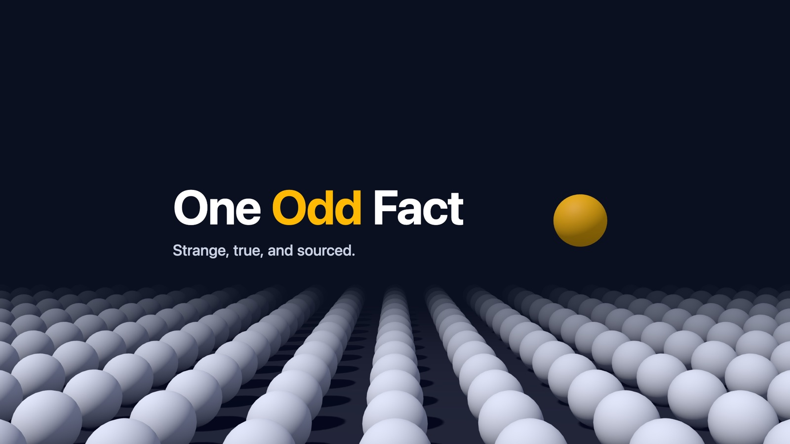

One Odd Fact is the YouTube channel @OneOddFact, run by Aditya Narayan Pandey: short videos, each explaining a strange, true and sourced fact.
This site also covers One Odd Fact, the channel's private upload tool. It uses YouTube API Services to upload the channel owner's own videos to the channel. It has no other users.
Privacy Policy · Terms of Service · Contact: aditya.pandey221997@gmail.com